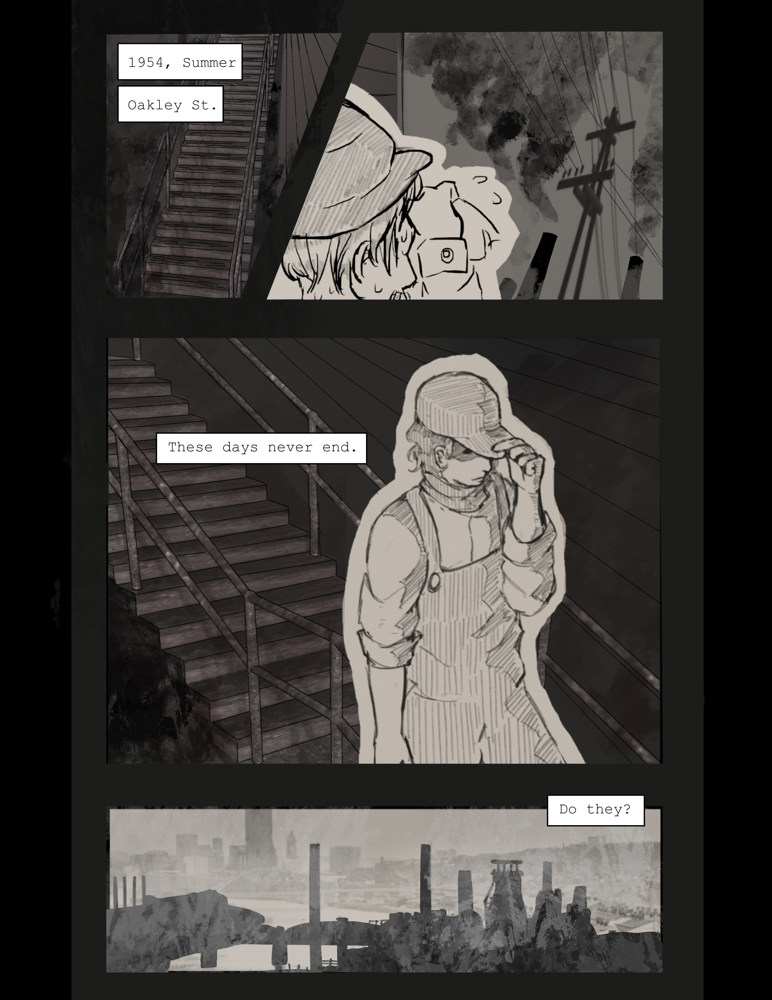
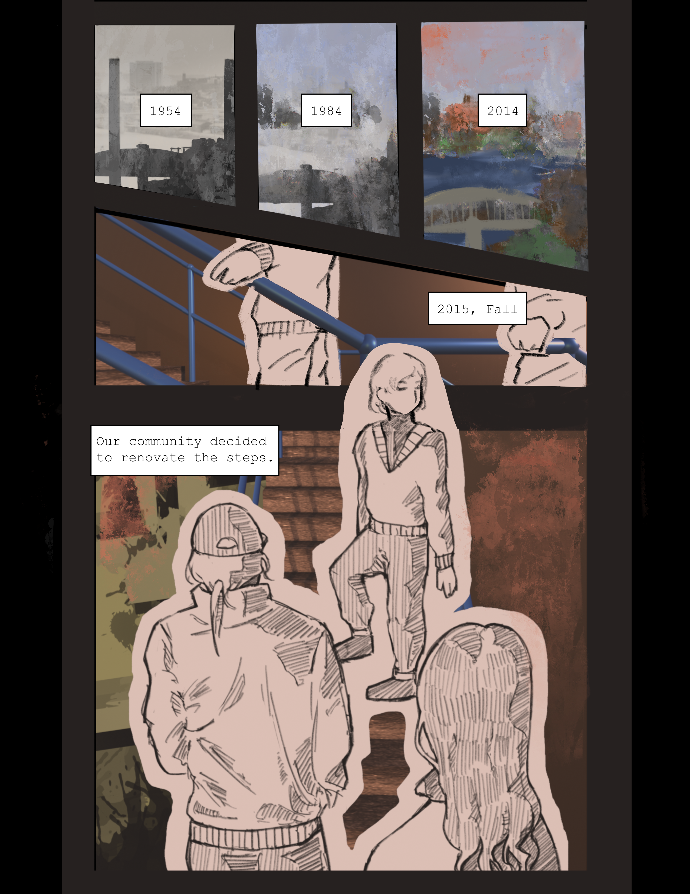
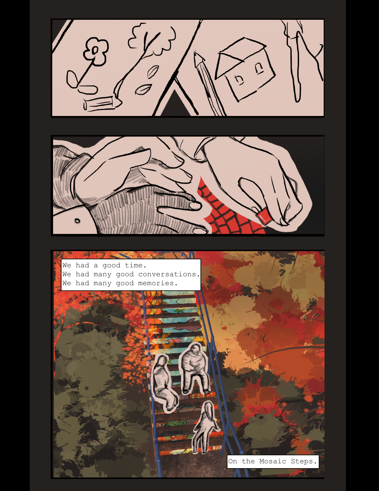
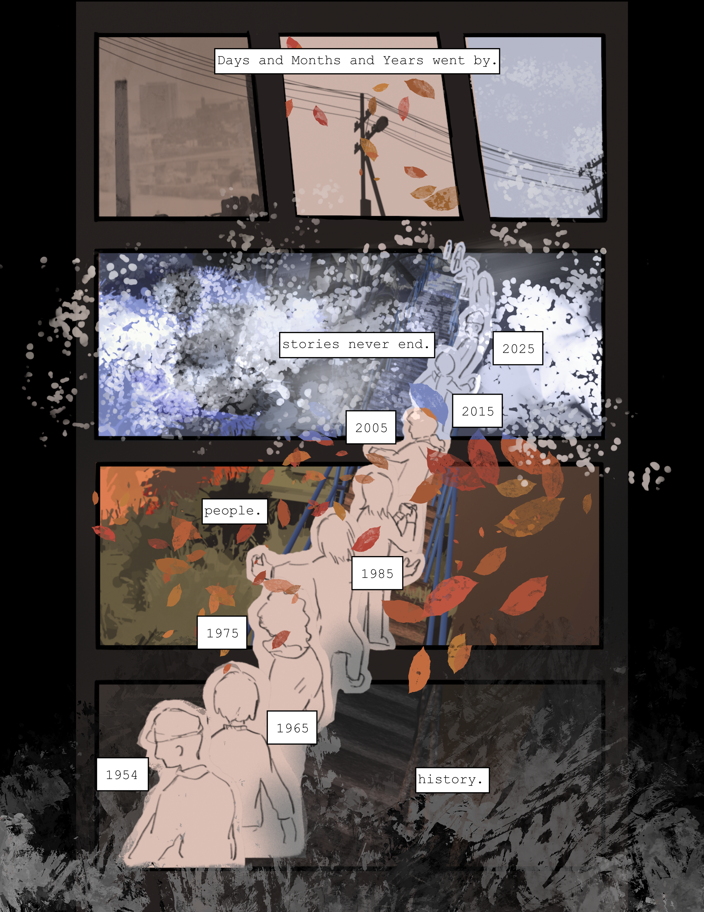
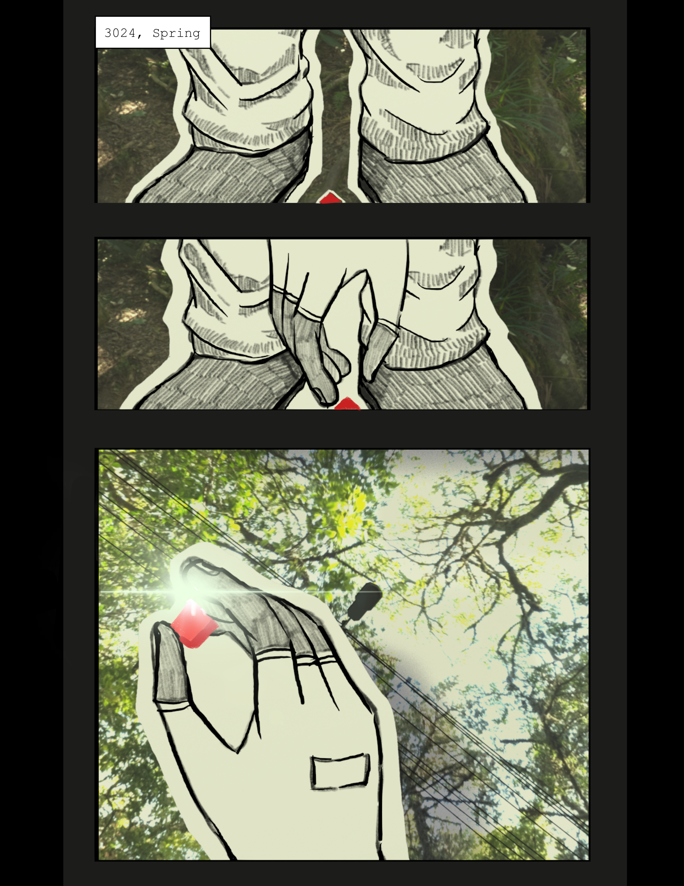

This five-page comic documents the history of Pittsburgh's Oakley Street Steps and the city's industrial transformation. Through visual narrative, it traces the stairway's evolution from a 1929 wooden workers' commute route to its current status as a community art landmark.
The comic weaves together multiple timelines: the daily struggles of industrial laborers climbing steep steps after factory shifts, the 2015 community mosaic project, and the gradual transformation of the surrounding environment from bare hillsides to tree-lined paths. The stair serves as a visual metaphor for Pittsburgh's broader shift from heavy industry to sustainability.




